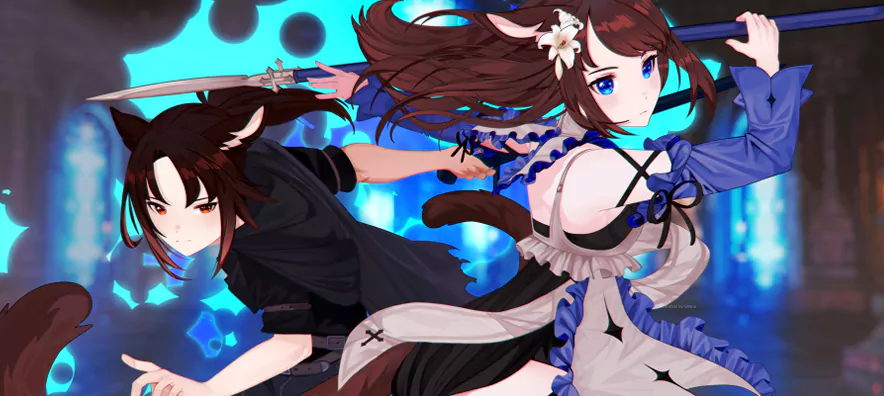
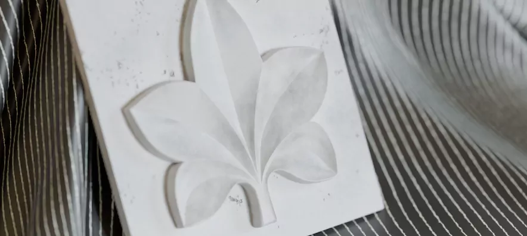

About me
My name is Tanya. I'm an artist, designer and front-end developer from Russia.
I've studied design in Moscow college on the grand by passing academy art exam with the highest score in 2016.
While studying I had to start freelancing as an artist and designer.
After graduation I started to learn more skills I could use. It's 3D graphics and programming languages. Now I have even more instruments to create and I will never stop learning new things.
. . . . .
Drawing and animation
Drawing has been the biggest part of my life. I started taking art seriously in 2012 upon receiving my first graphic tablet. I started to commercialize my work in 2017 and am still going strong.
3D
Since 2021, I taught myself to work with 3D. My favorite part about creating 3D models is retopology and procedural generations. I love to have the ability to change and fix models at any given time to fit the needs of each project. Knowledge of 3D gives me more tools to explore when working with design and art. I look forward to progress my journey through programming in 3D environments. Creating new worlds was always such a magnificent idea to me, and anything I can do to further that dream, I would be more than happy to take.
Photography
Photography enables me to not only express my artistic creativity, but explore the world around us. Recently, I've even been able to apply these skills for commercial use.